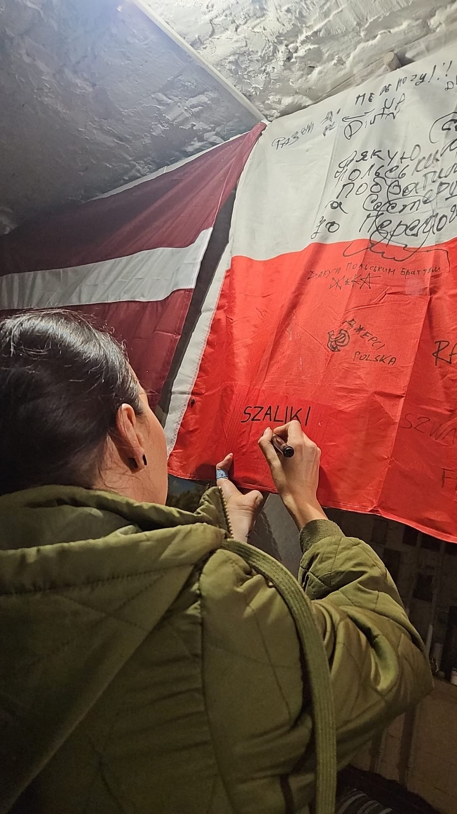
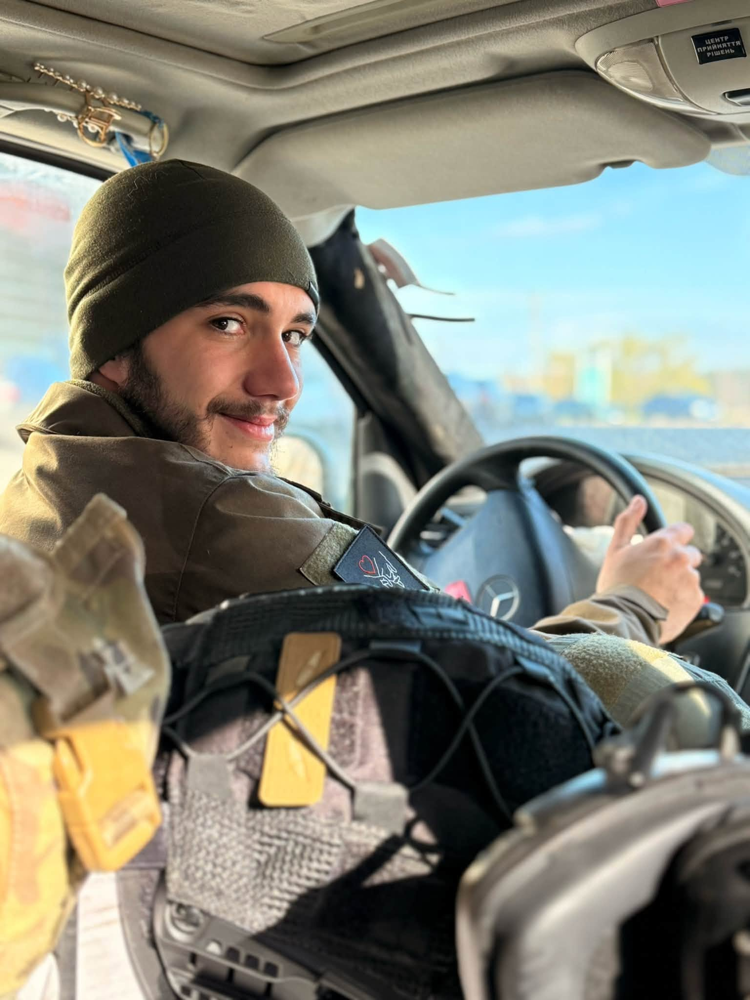

Sarah
Pomysłodawczyni Szalików i organizatorka pomocy. Już od drugiego dnia wojny wraz ze znajomymi pomagała przy transporcie żywności i koców. Z czasem zaczęła organizować kolejne wyjazdy do Ukrainy — zawsze blisko ludzi i ich codziennych potrzeb.
Słuchamy, organizujemy i jedziemy. Przez kolejne wyjazdy nauczyliśmy się, jak ważne jest móc na sobie polegać.
Są z nami osoby, które pomagają po cichu i chcą pozostać anonimowe. Nie będziemy odsłaniać ich imion ani stawiać ich przed obiektywem. Chcemy tylko powiedzieć: widzimy Was i pamiętamy. Wasza obecność jest częścią tej drogi — w zaufaniu, dobrym słowie i wsparciu, które przychodzi bez rozgłosu.
Dziękujemy, że jesteście.
To tylko krótkie portrety. Najwięcej o nas mówią wspólne wyjazdy i ludzie, których spotykamy.
Pomysłodawczyni Szalików i organizatorka pomocy. Już od drugiego dnia wojny wraz ze znajomymi pomagała przy transporcie żywności i koców. Z czasem zaczęła organizować kolejne wyjazdy do Ukrainy — zawsze blisko ludzi i ich codziennych potrzeb.
Zanim skończył 18 lat, zaczął jeździć do Ukrainy z pomocą humanitarną. Ma doświadczenie medyczne i dzieli się wiedzą z zespołem, ucząc rzeczy, których — mamy nadzieję — nigdy nie będziemy musieli sprawdzać w praktyce. W działaniu jest konkretny; o strachu potrafi mówić wprost.
Ukończył szkołę plastyczną, interesuje się historią i rekonstrukcją historyczną, a na co dzień prowadzi rodzinne gospodarstwo. Z pomocą jeździł od początku wojny. Z Sarah dzieli pomysł stworzenia wystawy z przedmiotów przywiezionych z Ukrainy — żeby opowiadać o tym, co się tam dzieje.
Na co dzień pracuje z końmi. Pierwszy wyjazd do Ukrainy od razu zaprowadził ją do Kramatorska. Sarah mówi o niej: spokojna, twarda, z głową na karku — ktoś, kto w trudnej chwili nie dokłada paniki i pomaga odzyskać równowagę.
Sylwetki opracowaliśmy na podstawie rozmowy opublikowanej w „Gwarku” 14 czerwca 2026 roku ↗.





